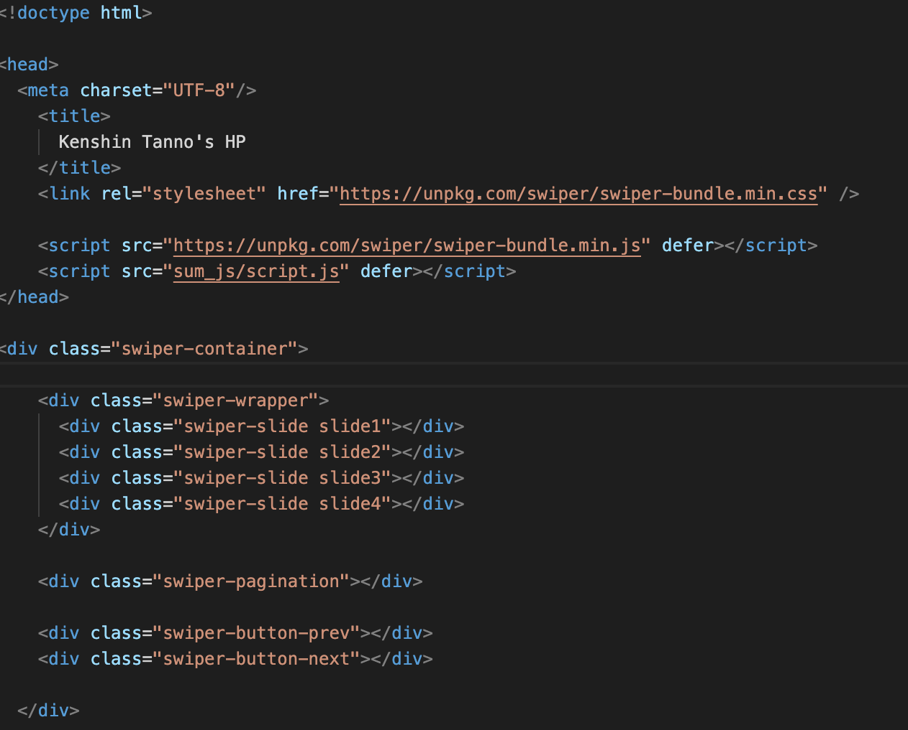
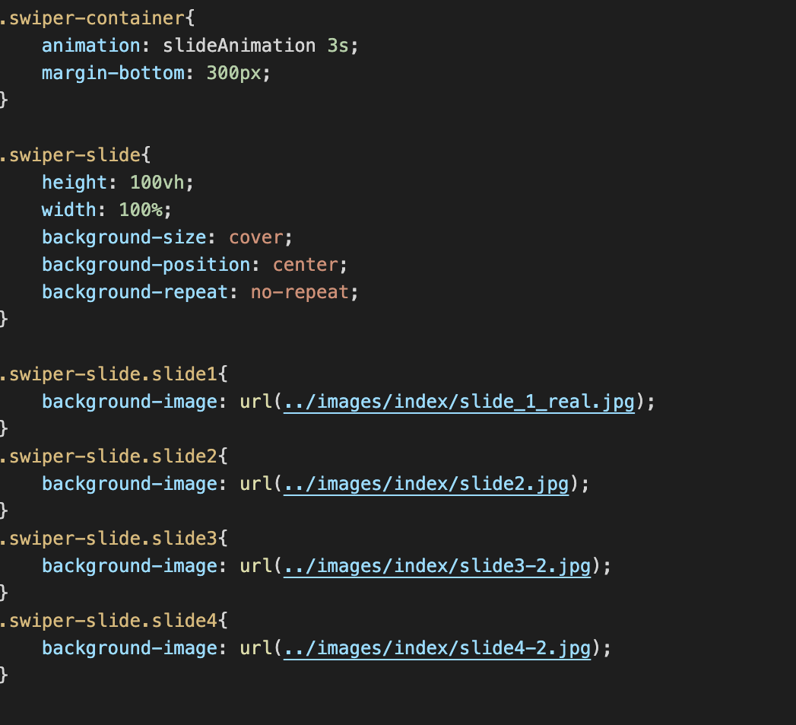
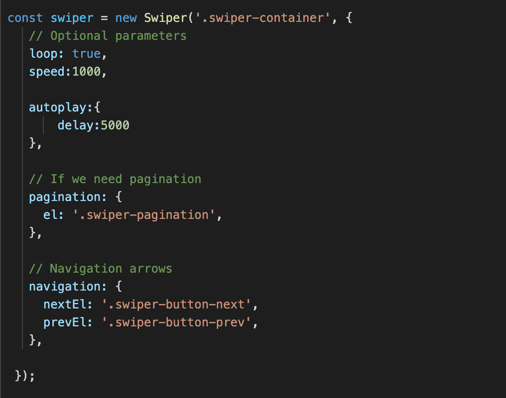
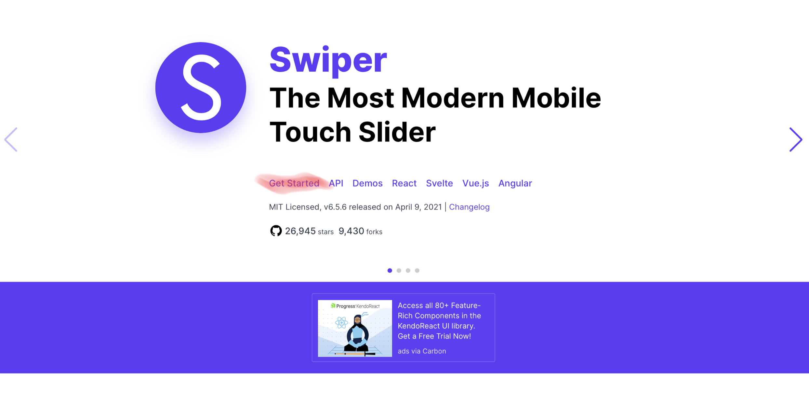
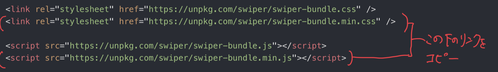
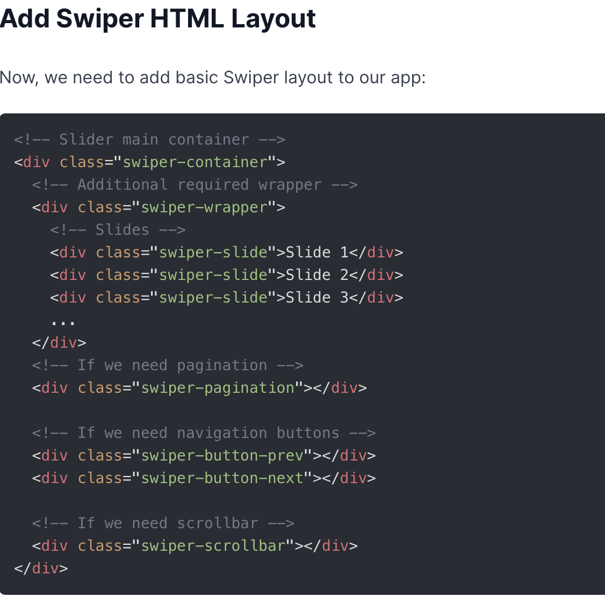
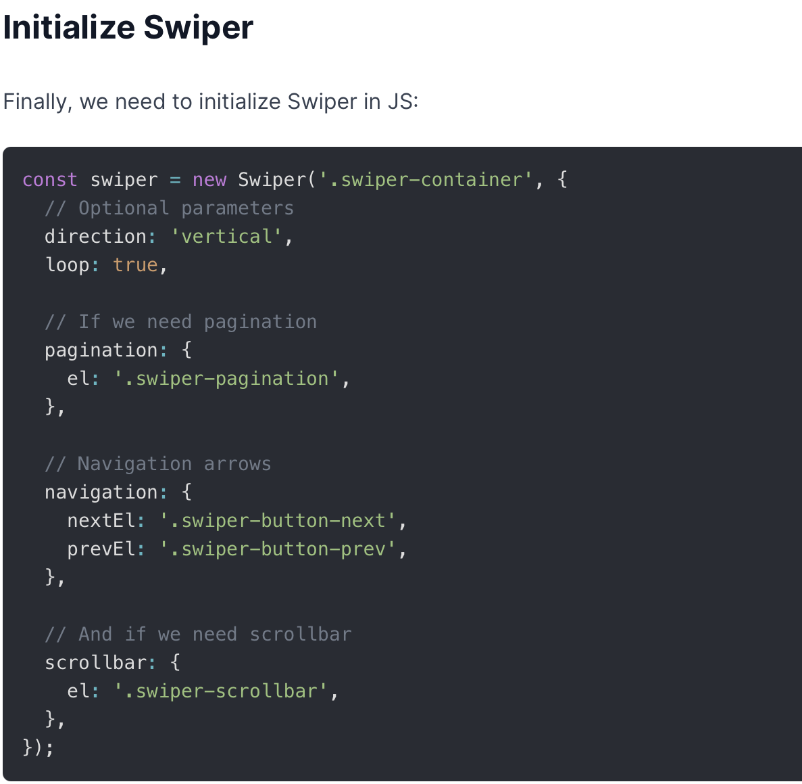

ようこそ☺︎



・Macbook pro
・Visual Studio Code
・Swiper
実はこのスライド、サイトからコードを持ってくるだけなので、とっても簡単です。
① Swiper に移動。

②Get Startedへ。

③示されたリンクをコピーして、HTMLのCSSとJSのところにペースト。（参考: ゴールの画像 ）

①先ほどコピーしたサイトを、そのまま下にスクロールしていくとある、このコードをコピペ。
（参考: HTMLの画像 ）

①少し下に行ったところの、コードをコピペ。
（参考: JSの画像 ）
<link rel="stylesheet" href="https://unpkg.com/swiper/swiper-bundle.min.css" />
<link rel="stylesheet" href="sum_css/first_index.css">
<script src="https://unpkg.com/swiper/swiper-bundle.min.js" defer></script>
<script src="sum_js/script.js" defer></script>
①CSSとJSの読み込みを行なっている。deferをつけることを忘れずに。
<div class="swiper-slide slide1"></div>
<div class="swiper-slide slide2"></div>
<div class="swiper-slide slide3"></div>
<div class="swiper-slide slide4"></div>
②スライド画像を読み込むコード。設定はCSSで行う。
<div class="swiper-pagination"></div>
③ここはページネーションを表示する。
<div class="swiper-button-prev"></div>
<div class="swiper-button-next"></div>
④スライドの前後に移動する矢印の表示する。
.swiper-container{
animation: slideAnimation 3s;
margin-bottom: 300px;
}
①スライド全ての操作を行なっている。アニメーションはJSで行う。
.swiper-slide{
height: 100vh;
width: 100%;
background-size: cover;
background-position: center;
background-repeat: no-repeat;
}
②スライドの表示サイズを設定している。
.swiper-slide.slide1{
background-image: url(../images/index/slide_1_real.jpg);
}
.swiper-slide.slide2{
background-image: url(../images/index/slide2.jpg);
}
.swiper-slide.slide3{
background-image: url(../images/index/slide3-2.jpg);
}
.swiper-slide.slide4{
background-image: url(../images/index/slide4-2.jpg);
}
③ここで表示させたい画像の読み込みを行なっている。
const swiper = new Swiper('.swiper-container', {});
①ここで読み込む。
loop: true,
speed:1000,
②ループをありにして、スライドスピードを調整している。
autoplay:{
delay:5000
},
③自動で動くようにし、5秒間待機させている。
pagination: {
el: '.swiper-pagination',
},
④ページネーションが必要ならこれを記述する。
navigation: {
nextEl: '.swiper-button-next',
prevEl: '.swiper-button-prev',
},
⑤スライドを移動させる前後の矢印を表示させている。
これでスライドを実装できるようになったと思います。
これは、 こちらのYouTuberさんを参考にしています。
YouTubeには、わかりやすい解説動画がたくさん載っているので、是非飛んで見てください。
ちなみに、スライドの画像はPhotoshopとIllustraterで作成しました。
もし画像の作成方法が、気になる方はいつかアップするので待っていてください。
Fin.